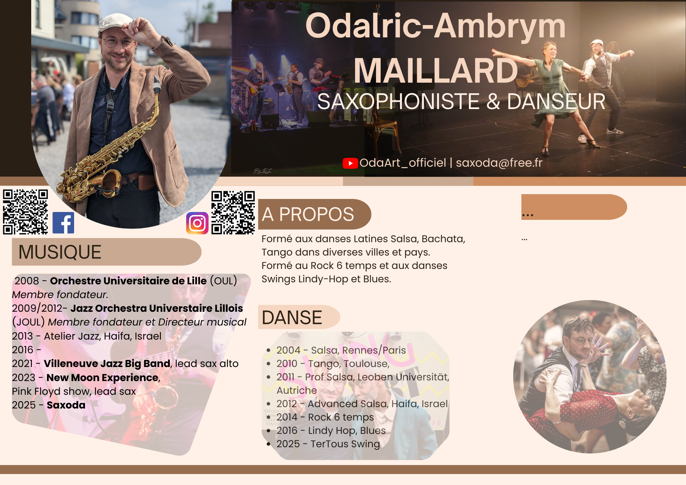
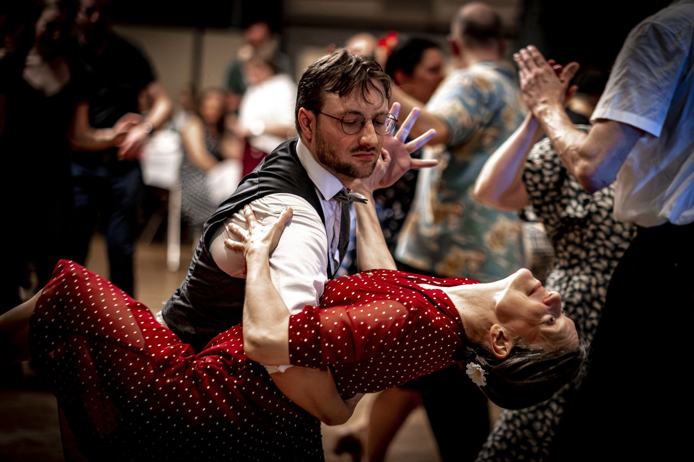

|
Place Vendôme, @Laurent Loussan
|
En tant que musicien, votre musique influence le monde. Quels messages souhaitez-vous faire passer par votre musique ? Il est important de conscientiser cela, et nourrir l'essence même de votre être. Vous avez un rôle à jouer, interrogez-vous sur celui que vous voulez jouer, interrogez votre pratique. En ce sens, je rejoins Sona Jobarteh que je paraphrase ici, grande artiste, descendante d'une grande lignée de griots et griot elle-même, ayant choisit la musique et tout particulièrement la Kora comme support d'expression.
2023-, NewMoon Experience, a Pink Floyd tribute, saxophones. |
|

Bal Swing, Douai, @MS
|
En tant que kinesthète, le mouvement est ma première forme d'expression, loin devant toutes les autres. Il paraît que la plupart des gens ont une dominante visuelle ou auditive. Quelle est la vôtre? |

|
@OAM
|
"Je connais un million de types qui vont écrire un livre" (Jacques Brel) |